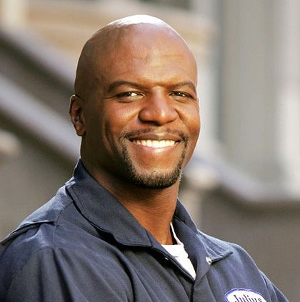
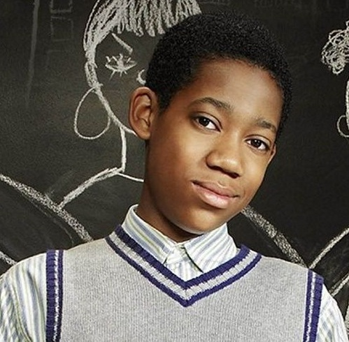

Bem-vindo ao Brooklyn dos anos 80!

Julius

Chris
Rochelle
Todo Mundo Odeia o Chris, a série que conquistou gerações com muito humor e histórias marcantes.
Responda às perguntas com sinceridade e descubra se você se parece mais com Julius, Rochelle ou Chris.
Vamos começar?